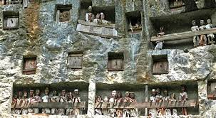

Destinasi Populer

Kete Kesu
Sebuah desa tradisional yang terkenal dengan rumah adat Tongkonan, lumbung padi, dan kuburan tebing yang memukau.

Londa
Londa adalah kuburan batu khas Toraja yang dihiasi dengan patung-patung leluhur dan pemandangan yang menakjubkan.

Patung Yesus Buntu Burake
Patung Yesus terbesar di Asia yang terletak di atas bukit dengan pemandangan spektakuler.

Air Terjun Sarang
Sebuah air terjun yang menawarkan suasana alami dan segar, cocok untuk melepas penat.